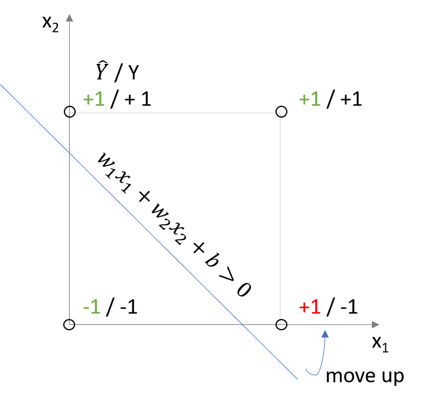

In my blog post Neural Nets: From Linear Regression to Deep Nets I talked about how a deep neural net is simply a sequence of simple building blocks of the form:
\[\sigma(\underbrace{w^T}_{weights}x + \overbrace{b}^{bias}) = a\]
and that a linear regression model is one of the most basic neural networks where the activation function \(\sigma\) is the identity function:
In this post I will show you how you can use a model called a Perceptron to classify points and thereby build the operators AND, OR and NOT. Furthermore, by combining multiple Perceptrons we can also model the XOR operator, which allows us to build more complex classifiers. A perceptron is defined as follows:
The activation function \(f\) is also called Heaviside step function. Note that this function is not differentiable at \(x = 0\) and the derivative is 0 everywhere else. Since neural nets are trained using gradient descent this activation function is rarely used except in simple cases that can be calculated without gradient descent.
So the only difference between a Perceptron and linear regression is the activation function.
However, thinking about the properties of the Perceptron is still useful in my opinion as it provides interesting insights into more complex models.
The following examples are based on the excellent (and free!) Udacity course: ‘Introduction to Deep Learning with Pytorch’.
Let’s start with a few examples:
The AND operator is defined as follows:
| in | in | out |
|---|---|---|
| 1 | 1 | 1 |
| 1 | 0 | 0 |
| 0 | 1 | 0 |
| 0 | 0 | 0 |
The OR operator is given by:
| in | in | out |
|---|---|---|
| 1 | 1 | 1 |
| 1 | 0 | 1 |
| 0 | 1 | 1 |
| 0 | 0 | 0 |
How can we represent these operators using a Perceptron? Graphically, we want to find the following lines:
Obviously there are multiple solutions that give the same answer. How can we find one of the solutions?
In \(\mathbb{R}^2\) we can simply rewrite \(w_1x_1 + w_2x_2 + b = 0\) as \(x_2 = -w_1/w_2x_1 - b/w_2\) and solve the problem graphically. We could also solve the associated system of inequalities to get our solution.
But how can we find a ‘solution’ if it is not possible to classify all points correctly using a linear classifier? In math speak, how can we find a solution to an overdetermined and most likely inconsistent system?
This is were the perceptron trick comes in.
Suppose we misclasify a point. Say we predict label +1 for point \((0,1)\), but the point actually has label -1, how can we update the line?

Intuitively, the line should move closer to the misclassified point and ideally move past it. How can we do that? We can increase/decrease the bias and thereby affect the intercept of the line and we can increase/decrease the weights to change the slope of the line. The idea carries over to higher dimensonal spaces, with the only exception being that we don’t have a line separating the space, but a hyperplane.
We will now code the Perceptron algorithm to iteratively update the weights and the bias either until all points are classified correctly or up to a certain number of rounds.
## Perceptron Algorithm
import numpy as np
np.random.seed(42)
X = np.array([[0, 0], [0, 1], [1, 0], [1, 1]])
y = np.array([-1, 1, -1, 1])
W = np.array([1, 1])
bias = -0.5
yhat = np.sign(np.matmul(X,W) + bias)
num_epochs = 1
learn_rate = 0.01
while sum(abs(yhat-y)) > 0 and num_epochs <= 25:
for row in range(0, len(X)):
if y[row] * (np.matmul(X[row],W) + bias) <= 0:
## if signs do not agree, we have a misclassification
## and a negative output
W[0] += (y[row] * X[row][0])*learn_rate
W[1] += (y[row] * X[row][1])*learn_rate
bias += y[row]*learn_rate
## print results
print("Weights: {}, Bias: {}, Epoch: {}".format(W, bias, num_epochs))
## update while conditions
num_epochs += 1
yhat = np.sign(np.matmul(X,W) + bias)
print("Prediction:\t {}\nActual:\t\t {}".format(yhat, y))Weights: [0 1], Bias: -0.51, Epoch: 1
Prediction: [-1 1 -1 1]
Actual: [-1 1 -1 1]So what did we do?
Given a random starting hyperplane:
\[w_1x_1 +w_2x_2 +b=0\]
and a misclassified point \((c,d)\) with label \(y \in \{-1,1\}\) and learning rate \(l\)
we update the hyperplane as follows: \[ \begin{align*} w_1& +w_2 +b &=0 \\ +y*l(c& +d +b)&=0 \end{align*} \]
So we are nudging the hyperplane closer to the misclassified point.
Rather simple, is it not?:)
However, note that the Perceptron algorithm can converge to any hyperplane that manages to classify most/all points correctly. But clearly, some hyperplanes are ‘better’ in the sense that they are more stable than others. The ‘perceptron of optimal stability’ is better known under the name ‘linear support vector machine’ (see Krauth and Mezard, 1987)
I hope you found the post interesting!
The Perceptron algorithm above is based on the Pseudo Code from:
with small adaptions.